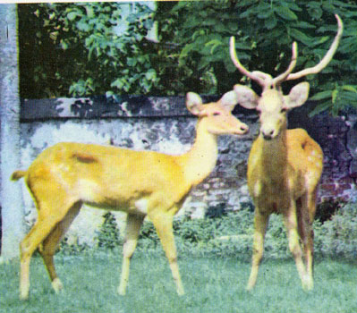
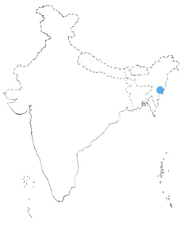

<head>
<meta http-equiv="Content-Type" content="text/html; charset=windows-1252">
<meta name="GENERATOR" content="Microsoft FrontPage 4.0">
<meta name="ProgId" content="FrontPage.Editor.Document">
<title>New Page 1</title>
<meta http-equiv="Content-Type" content="text/html; charset=windows-1252">
<meta name="GENERATOR" content="Microsoft FrontPage 4.0">
<meta name="ProgId" content="FrontPage.Editor.Document">
<title>ECONOMICALLY IMPORTANT PLANTS OF INDIA compiled by K</title>
<meta http-equiv="Content-Type" content="text/html; charset=windows-1252">
<meta name="GENERATOR" content="Microsoft FrontPage 4.0">
<meta name="ProgId" content="FrontPage.Editor.Document">
<title>ECONOMICALLY IMPORTANT PLANTS OF INDIA</title>
<meta http-equiv="Content-Type" content="text/html; charset=windows-1252">
<meta name="GENERATOR" content="Microsoft FrontPage 4.0">
<meta name="ProgId" content="FrontPage.Editor.Document">
<title>New Page 1</title>
<META HTTP-EQUIV="CONTENT-TYPE" CONTENT="text/html; charset=windows-1252">
<TITLE>Aegle marmelos </TITLE>
<META NAME="GENERATOR" CONTENT="Microsoft FrontPage 4.0">
<META NAME="CREATED" CONTENT="20010726;17265013">
<META NAME="CHANGEDBY" CONTENT="L.Sowmya">
<META NAME="CHANGED" CONTENT="20020726;13003551">
<META NAME="DESCRIPTION" CONTENT="Economically Important Plants">
<META NAME="KEYWORDS" CONTENT="Abies pindrow">
<META NAME="ProgId" CONTENT="FrontPage.Editor.Document">
<STYLE>
	<!--
		P { color: #2c9a97 }
	-->
	</STYLE>
<meta name="Microsoft Theme" content="none">
<link>
</head>

<body LANG="en-US" bgcolor="#CCCCCC" text="#009999">
<P><A NAME="begin"></A>
</P>
<table border="1" width="100%">
  <tr>
    <td width="100%" bgcolor="#1658BC">
      <P ALIGN=CENTER><b><font face="Verdana" size="6" color="#FFFFFF">Digitized
      Inventory of Animal Resources: Mammalia&nbsp;</font></b> <font color="#FFFFFF"><br>
      <b>
      Principal Investigator: Dr. R. J. B Alfred, Co-Investigator: Dr. Rama Krishna, Contributed by:
      Dr. M.S.Pradhan</b></font><br>
      </P>
    </td>
  </tr>
</table>
<p ALIGN="CENTER">&nbsp;</p>
<p ALIGN="CENTER"><a href="http://stp.unipune.ernet.in/zsi/photomap.html?code=107"><i style="mso-bidi-font-style:normal"><font color="#808000"><span style="color: black"><font face="Arial"><span style="font-family: Verdana"><font size="6"><span style="mso-bidi-font-size: 12.0pt; font-family: Verdana; mso-fareast-font-family: Times New Roman; mso-bidi-font-family: Times New Roman; color: black; mso-ansi-language: EN-US; mso-fareast-language: EN-US; mso-bidi-language: AR-SA; mso-ansi-font-size: 9.0pt; mso-bidi-font-weight: normal"><b style="mso-bidi-font-weight: normal; mso-ansi-font-size: 9.0pt; color: black; mso-bidi-font-size: 12.0pt; font-family: Verdana; mso-fareast-font-family: Times New Roman; mso-bidi-font-family: Times New Roman; mso-ansi-language: EN-US; mso-fareast-language: EN-US; mso-bidi-language: AR-SA"><span style="mso-ansi-font-size: 9.0pt; color: black; mso-bidi-font-weight: normal; mso-bidi-font-size: 12.0pt; font-family: Verdana; mso-fareast-font-family: Times New Roman; mso-bidi-font-family: Times New Roman; mso-ansi-language: EN-US; mso-fareast-language: EN-US; mso-bidi-language: AR-SA">Cervus
eldi eldi</span></b></span></font></span></font></span></font></i><font color="#808000"><span style="color: black"><font face="Arial"><span style="font-family: Verdana"><font size="6"><b style="mso-bidi-font-weight: normal; mso-ansi-font-size: 9.0pt; color: black; mso-bidi-font-size: 12.0pt; font-family: Verdana; mso-fareast-font-family: Times New Roman; mso-bidi-font-family: Times New Roman; mso-ansi-language: EN-US; mso-fareast-language: EN-US; mso-bidi-language: AR-SA"><span style="mso-ansi-font-size: 9.0pt; color: black; mso-bidi-font-weight: normal; mso-bidi-font-size: 12.0pt; font-family: Verdana; mso-fareast-font-family: Times New Roman; mso-bidi-font-family: Times New Roman; mso-ansi-language: EN-US; mso-fareast-language: EN-US; mso-bidi-language: AR-SA">
(McClellond)</span></b></font></span></font></span></font></a></p>
<P ALIGN=LEFT><font size="6" face="Comic Sans MS" color="#009999"><b>&nbsp;&nbsp;&nbsp;&nbsp;&nbsp;&nbsp;&nbsp;&nbsp;&nbsp;&nbsp;&nbsp;&nbsp;&nbsp;&nbsp;&nbsp;&nbsp;&nbsp;&nbsp;&nbsp;&nbsp;</b></font></P>
<P ALIGN=LEFT><A HREF="#Taxonomic Details"><FONT FACE="Comic Sans MS">Taxonomic 
  Details</FONT> </A><FONT FACE="Comic Sans MS"><BR>
  ----- </FONT><A HREF="#Scientific Name"><FONT FACE="Comic Sans MS">Scientific Name</FONT></A><FONT FACE="Comic Sans MS"><BR>
  ----- </FONT><A HREF="#Classification"><FONT FACE="Comic Sans MS">Classification</FONT></A><FONT FACE="Comic Sans MS"><BR>
  ----- </FONT><A HREF="#Synonyms"><FONT FACE="Comic Sans MS">Synonyms</FONT></A><FONT FACE="Comic Sans MS"><BR>
  ----- </FONT><A HREF="#Common Names"><FONT FACE="Comic Sans MS">Common Names</FONT></A><FONT FACE="Comic Sans MS"><BR>
  </FONT><A HREF="#Other Biological Details"><FONT FACE="Comic Sans MS">Other 
  Biological Details</FONT></A><FONT FACE="Comic Sans MS"><BR>
  ----- </FONT><A HREF="#Habit and Habitat"><FONT FACE="Comic Sans MS">Habit and 
  Habitat</FONT></A><FONT FACE="Comic Sans MS"><BR>
  ----- </FONT><A HREF="#Distribution"><FONT FACE="Comic Sans MS">Distribution</FONT></A><FONT FACE="Comic Sans MS"><BR>
  ---------- </FONT><A HREF="#Extend of Occurance"><FONT FACE="Comic Sans MS">Extend of
Occurrence</FONT></A><FONT FACE="Comic Sans MS"><BR>
  ---------- </FONT><A HREF="#Area of occurance"><FONT FACE="Comic Sans MS">Area of
</FONT></A><A HREF="#Area of occurance"><font face="Comic Sans MS">occurrence</font></A><FONT FACE="Comic Sans MS"><BR>
  ---------- </FONT><A HREF="#Altitude:"><FONT FACE="Comic Sans MS">Altitude</FONT></A><FONT FACE="Comic Sans MS"><BR>
  ---------- </FONT><A HREF="#Population:"><FONT FACE="Comic Sans MS">Population</FONT></A><FONT FACE="Comic Sans MS"><BR>
  ----- </FONT>
  <A HREF="#Conservation Status:"><FONT FACE="Comic Sans MS">Conservation Status</FONT></A><FONT FACE="Comic Sans MS"><BR>
  ----- </FONT>
  <A HREF="#Diagnostic Features"><FONT FACE="Comic Sans MS">Diagnostic 
  Features</FONT></A><FONT FACE="Comic Sans MS"><BR>
  ----- </FONT>
<a HREF="#Breeding system"><FONT FACE="Comic Sans MS">Breeding system</FONT></a><FONT FACE="Comic Sans MS"><BR>
  </FONT><A HREF="#Miscellaneous Information"><FONT FACE="Comic Sans MS">Miscellaneous 
  Information</FONT></A><FONT FACE="Comic Sans MS"><BR>
  </FONT><A HREF="#Literature"><FONT FACE="Comic Sans MS">Literature</FONT></A></P>
<HR SIZE=3 COLOR="#0000ff">
<P><A NAME="Taxonomic Details"></A><FONT SIZE=6><FONT FACE="Monotype Corsiva"><FONT COLOR="#1658bc"><u>Taxonomic 
  Details</u></FONT></FONT></FONT> </P>
<HR SIZE=3 COLOR="#0000ff">
<P><A NAME="Scientific Name"></A><A NAME="Classification"></A><A NAME="Synonyms"></A><A NAME="Common Names"></A> 
  <FONT FACE="Comic Sans MS, sans-serif"><U>Scientific Name</U> :&nbsp;</FONT><font face="Comic Sans MS, sans-serif">&nbsp;</font><a href="http://stp.unipune.ernet.in/zsi/photomap.html?code=107"><i style="mso-bidi-font-style:normal"><font color="#808000"><span style="color: black"><font face="Arial" size="5"><span style="mso-bidi-font-size: 12.0pt; font-family: Verdana; mso-fareast-font-family: Times New Roman; mso-bidi-font-family: Times New Roman; color: black; mso-ansi-language: EN-US; mso-fareast-language: EN-US; mso-bidi-language: AR-SA; mso-ansi-font-size: 9.0pt; mso-bidi-font-weight: normal"><b style="mso-bidi-font-weight: normal; mso-ansi-font-size: 9.0pt; color: black; mso-bidi-font-size: 12.0pt; font-family: Verdana; mso-fareast-font-family: Times New Roman; mso-bidi-font-family: Times New Roman; mso-ansi-language: EN-US; mso-fareast-language: EN-US; mso-bidi-language: AR-SA">Cervus
eldi eldi</b></span></font></span></font></i><font color="#808000"><span style="color: black"><font face="Arial" size="5"><span style="color: black; mso-ansi-font-size: 9.0pt; mso-bidi-font-weight: normal; mso-bidi-font-size: 12.0pt; font-family: Verdana; mso-fareast-font-family: Times New Roman; mso-bidi-font-family: Times New Roman; mso-ansi-language: EN-US; mso-fareast-language: EN-US; mso-bidi-language: AR-SA"><b style="mso-bidi-font-weight: normal; mso-ansi-font-size: 9.0pt; color: black; mso-bidi-font-size: 12.0pt; font-family: Verdana; mso-fareast-font-family: Times New Roman; mso-bidi-font-family: Times New Roman; mso-ansi-language: EN-US; mso-fareast-language: EN-US; mso-bidi-language: AR-SA">
(McClellond)</b></span></font></span></font></a></P>
<P><font face="Comic Sans MS" size="3"><U>Classification</U><b><U>:</U></b></font></P>
<blockquote>
  <blockquote>
    <blockquote>
      <blockquote>
        <blockquote>
          <blockquote>
<P><font face="Arial" size="4"><span style="mso-bidi-font-size: 12.0pt; color: black">Order:<i style="mso-bidi-font-style:normal">Artiodactyla</i><o:p>
</o:p>
</span></font></P>
<P><font face="Arial" size="4"><span style="mso-bidi-font-size: 12.0pt; color: black">Family:<i style="mso-bidi-font-style:normal">Cervidae</i><o:p>
</o:p>
</span></font></P>
            <span style="mso-bidi-font-size: 12.0pt; mso-fareast-font-family: Times New Roman; mso-bidi-font-family: Times New Roman; color: black; mso-ansi-language: EN-US; mso-fareast-language: EN-US; mso-bidi-language: AR-SA"><font face="Arial" size="4">Subfamily:</font><i style="mso-bidi-font-style:normal"><font face="Arial" size="4">Cervinae</font></i></span>
          </blockquote>
        </blockquote>
      </blockquote>
    </blockquote>
  </blockquote>
</blockquote>
<P><font face="Comic Sans MS, sans-serif" size="3">
  <U>Synonyms</U>:&nbsp;&nbsp;&nbsp;&nbsp;&nbsp;&nbsp;&nbsp;&nbsp;&nbsp;&nbsp;&nbsp;&nbsp;&nbsp;&nbsp;&nbsp;&nbsp;&nbsp;&nbsp;&nbsp;&nbsp;&nbsp;&nbsp;&nbsp;&nbsp;&nbsp;&nbsp;&nbsp;&nbsp;&nbsp;&nbsp;&nbsp;
<i style="mso-bidi-font-style:normal"><span style="font-size:9.0pt;mso-bidi-font-size:12.0pt;font-family:Verdana;
mso-fareast-font-family:&quot;Times New Roman&quot;;mso-bidi-font-family:&quot;Times New Roman&quot;;
color:black;mso-ansi-language:EN-US;mso-fareast-language:EN-US;mso-bidi-language:
AR-SA">Cervus eldi cornipes, Lydekker</span></i> </font></P>
<P><font face="Comic Sans MS, sans-serif" size="3"><BR>
  <U>Common Names</U><SPAN STYLE="text-decoration: none">:&nbsp;</SPAN></font><FONT FACE="Comic Sans MS, sans-serif"><SPAN STYLE="text-decoration: none">&nbsp;&nbsp;&nbsp;&nbsp;&nbsp;&nbsp;&nbsp;&nbsp;&nbsp;&nbsp;&nbsp;&nbsp;&nbsp;&nbsp;&nbsp;&nbsp;&nbsp;&nbsp;&nbsp;&nbsp;&nbsp;
</SPAN></FONT><span style="font-size:9.0pt;
mso-bidi-font-size:12.0pt;font-family:Verdana;color:black">Thamin, Manipur
Brow-antlered Deer Manipur Thamin, Eld's Deer</span><span style="font-size:10.0pt;mso-bidi-font-size:12.0pt;
color:black">&nbsp;<o:p>
</o:p>
</span>
</P>
<p class="MsoNormal" style="text-align:justify"><span style="font-size:9.0pt;mso-bidi-font-size:12.0pt;font-family:
Verdana;color:black"><i style="mso-bidi-font-style:
normal">&nbsp;&nbsp;&nbsp;</i><i style="mso-bidi-font-style: normal; font-size: 9.0pt; mso-bidi-font-size: 12.0pt; font-family: Verdana; color: black">&nbsp;&nbsp;&nbsp;&nbsp;&nbsp;&nbsp;&nbsp;&nbsp;&nbsp;&nbsp;&nbsp;&nbsp;&nbsp;&nbsp;&nbsp;&nbsp;&nbsp;&nbsp;&nbsp;&nbsp;&nbsp;&nbsp;&nbsp;&nbsp;&nbsp;&nbsp;&nbsp;&nbsp;&nbsp;&nbsp;&nbsp;&nbsp;&nbsp;&nbsp;&nbsp;&nbsp;&nbsp;&nbsp;&nbsp;&nbsp;&nbsp;&nbsp;&nbsp;&nbsp;&nbsp;&nbsp;&nbsp;&nbsp;&nbsp;&nbsp;&nbsp;&nbsp;&nbsp;
</i><i style="mso-bidi-font-style:
normal">Regional Names:</i></span><span style="font-size:9.0pt;
mso-bidi-font-size:12.0pt;font-family:Verdana;color:black">&nbsp;Hindi: Thamin,
Manipuri : Sangai</span><span style="font-size:9.0pt;mso-bidi-font-size:12.0pt;
font-family:Verdana;mso-fareast-font-family:&quot;Arial Unicode MS&quot;;color:black"><o:p>
</o:p>
</span></p>
<P><FONT FACE="Comic Sans MS, sans-serif"><SPAN STYLE="text-decoration: none">
<b><font size="4" color="#000000">
  <BR>
</font></b>
  </SPAN></FONT><font face="Comic Sans MS"><BR>
  </font><BR>
</P>
<P ALIGN=RIGHT><A HREF="#begin"><U><FONT FACE="Comic Sans MS">Back to
Top</FONT></U></A></P>
<HR SIZE=3 COLOR="#0000ff">
<P><A NAME="Other Biological Details"></A><FONT SIZE=3><FONT SIZE=6><FONT FACE="Monotype Corsiva"><FONT COLOR="#1658bc"><u>Other 
  Biological Details</u></FONT></FONT></FONT></FONT> 
</P>
<p class="MsoNormal" style="text-align:justify"><i style="mso-bidi-font-style:
normal"><span style="font-size:9.0pt;mso-bidi-font-size:12.0pt;font-family:
Verdana;color:black">Threats:&nbsp;</span></i><span style="font-size:9.0pt;
mso-bidi-font-size:12.0pt;font-family:Verdana;color:black"> Interspecific
competetion, Disease, Habitat Fragmentation, Grazing, Loss of Habitat, Hunting,
Fishing in Lake, Siltation etc.;&nbsp;<i style="mso-bidi-font-style:normal">Effect
of threats on population (Perceived or inferred)</i>:&nbsp;Declining</span><span style="font-size:9.0pt;mso-bidi-font-size:12.0pt;font-family:Verdana;
mso-fareast-font-family:&quot;Arial Unicode MS&quot;;color:black"><o:p>
</o:p>
</span></p>
<p class="MsoNormal"><span style="font-size:10.0pt;mso-bidi-font-size:12.0pt;
color:black">&nbsp;</span><i style="mso-bidi-font-style:
normal"><span style="font-size:9.0pt;mso-bidi-font-size:12.0pt;font-family:
Verdana;color:black">Trade:&nbsp;</span></i><span style="font-size:9.0pt;
mso-bidi-font-size:12.0pt;font-family:Verdana;color:black"> No;&nbsp;<i style="mso-bidi-font-style:normal">Parts
in trade</i>:&nbsp;Not Known;&nbsp;<i style="mso-bidi-font-style:normal">Effect
of trade on population (Perceived or inferred)</i>:&nbsp;Not declining</span><span style="font-size:9.0pt;
mso-bidi-font-size:12.0pt;font-family:Verdana;mso-fareast-font-family:&quot;Arial Unicode MS&quot;;
color:black"><o:p>
</o:p>
</span></p>
<P>&nbsp; 
</P>
<HR SIZE=3 COLOR="#0000ff">
<P STYLE="margin-bottom: 0cm"><A NAME="Habit and Habitat"></A><U><FONT FACE="Comic Sans MS">HABIT 
  &amp; HABITAT</FONT></U></P>
<p class="MsoNormal" style="text-align:justify"><span style="font-size:9.0pt;
mso-bidi-font-size:12.0pt;font-family:Verdana;color:black">Brow-antlered Deer or
Sangai avoids hills and haevy forest. The shores of Logtak lake is comprised of
unique morass of floating organic humus called &quot;phum or &quot; &quot;phumdi&quot;.
It consists of dead and decaying vegeatation, mosses, algae,humus, tall
grasses,sedges and reeds. The grassy vegetation on such a floating swamp forms a
ideal and favourite habitat for sangai. Four-fifth part of &quot;phumdi&quot; is
submerged in water. Sangai feeds in early morning and late evengings. It forms
small herds of 4 to 7 sometimes even more. Rut period is between March to May.
Only single fawn is born.</span><span style="font-size:10.0pt;mso-bidi-font-size:12.0pt;
color:black">&nbsp;<o:p>
</o:p>
</span></p>
<p class="MsoNormal" style="text-align:justify"><i style="mso-bidi-font-style:
normal"><span style="font-size:9.0pt;mso-bidi-font-size:12.0pt;font-family:
Verdana;color:black">Habitat Structure:</span></i><span style="font-size:9.0pt;
mso-bidi-font-size:12.0pt;font-family:Verdana;color:black">&nbsp;Scrub jungle or
flater undualting land between rivers and hill ranges. Swampy areas in Keibul
Lamjao National Park in Manipur. Habitat structure is decreasing with general
decline.</span><font face="Comic Sans MS" size="3">&nbsp;&nbsp;&nbsp;<b>&nbsp;&nbsp;&nbsp;&nbsp;&nbsp;&nbsp;&nbsp;&nbsp;&nbsp;&nbsp;&nbsp;&nbsp;&nbsp;</b></p>
</font>
<p align=RIGHT style="margin-bottom: 0cm"><font face="Comic Sans MS" size="3"><a href="#begin">Back 
  to Top</a></font></p>
<P STYLE="margin-bottom: 0cm">&nbsp;</P>
<P><font size="3"><A NAME="Distribution"></A><A NAME="Extend of Occurance"></A><A NAME="Area of occurance:"></A><A NAME="Altitude:"></A><A NAME="Population:"></a><A NAME="Conservation status:"></A> 
  <FONT FACE="Comic Sans MS"><U>Distribution</U>:</FONT></font></P>
<P> 
  <FONT FACE="Comic Sans MS"><span style="font-size:9.0pt;
mso-bidi-font-size:12.0pt;font-family:Verdana;color:black">The Indian subspecies
  population is confined to the swamps of the Manipur valleys. Currently it is
  restricted to a very small swampy area of the Logtak Lake in Keibul Lamjao
  National Park (40 Sq. Km. area), Manipur.</span><span style="font-size:9.0pt;mso-bidi-font-size:12.0pt;font-family:Verdana;
mso-fareast-font-family:&quot;Arial Unicode MS&quot;;color:black"><o:p>
  </o:p>
  </span></FONT></P>
<p class="MsoNormal" style="margin-left:1.0in;text-align:justify;text-indent:
-1.0in"><i style="mso-bidi-font-style:
normal"><span style="font-size:9.0pt;mso-bidi-font-size:12.0pt;font-family:
Verdana;color:black">No.of Locations:&nbsp;</span></i><span style="font-size:
9.0pt;mso-bidi-font-size:12.0pt;font-family:Verdana;color:black">one;&nbsp;<i style="mso-bidi-font-style:normal">Type:&nbsp;</i>Isolated</span><span style="font-size:9.0pt;mso-bidi-font-size:12.0pt;font-family:Verdana;
mso-fareast-font-family:&quot;Arial Unicode MS&quot;;color:black"><o:p>
</o:p>
</span></p>
<P>&nbsp;</P>
<P><font face="Comic Sans MS" size="3"><U>Extent of </U><u>Occurrence&nbsp;&nbsp;&nbsp;</u>&nbsp;&nbsp;&nbsp;&nbsp;&nbsp;&nbsp;&nbsp;&nbsp;&nbsp;&nbsp;&nbsp;&nbsp;&nbsp;&nbsp;&nbsp;&nbsp;&nbsp;&nbsp;&nbsp;&nbsp;
<span style="font-size:9.0pt;
mso-bidi-font-size:12.0pt;font-family:Verdana;color:black">11-100 sq.kms.</span><span style="font-size:9.0pt;mso-bidi-font-size:12.0pt;font-family:Verdana;
mso-fareast-font-family:&quot;Arial Unicode MS&quot;;color:black"><o:p>
</o:p>
</span>
  </font></P>
<P STYLE="margin-bottom: 0cm"><font face="Comic Sans MS" size="3"><U>Area of occurrence:&nbsp;&nbsp;&nbsp;</U>&nbsp;&nbsp;&nbsp;&nbsp;&nbsp;&nbsp;&nbsp;&nbsp;&nbsp;&nbsp;&nbsp;&nbsp;&nbsp;&nbsp;&nbsp;&nbsp;&nbsp;&nbsp;&nbsp;&nbsp;&nbsp;&nbsp;&nbsp;&nbsp;
<span style="font-size:9.0pt;
mso-bidi-font-size:12.0pt;font-family:Verdana;color:black">11-100 sq.kms.</span><span style="font-size:9.0pt;mso-bidi-font-size:12.0pt;font-family:Verdana;
mso-fareast-font-family:&quot;Arial Unicode MS&quot;;color:black"><o:p>
</o:p>
</span> 
  </font></P>
<P STYLE="margin-bottom: 0cm"><font face="Comic Sans MS" size="3"><U>Altitude:</U></font><font color="#000000" face="Comic Sans MS" size="4">&nbsp;&nbsp;</font><font face="Comic Sans MS" size="3"><BR>
  <BR>
  <U>Population:</U>&nbsp; </font></P>
<p class="MsoNormal" style="text-align:justify"><i style="mso-bidi-font-style:
normal"><span style="font-size:9.0pt;mso-bidi-font-size:12.0pt;font-family:
Verdana;color:black">Global Population:&nbsp;</span></i><span style="font-size:
9.0pt;mso-bidi-font-size:12.0pt;font-family:Verdana;color:black">Regional
Population: &lt;100 (Chakraborty, 1989);&nbsp;<i style="mso-bidi-font-style:
normal">No.of mature individuals in all the populations:&nbsp;</i>less than 250</span><span style="font-size:10.0pt;mso-bidi-font-size:12.0pt;
color:black">&nbsp;<o:p>
</o:p>
</span></p>
<p class="MsoNormal" style="text-align:justify"><i style="mso-bidi-font-style:
normal"><span style="font-size:9.0pt;mso-bidi-font-size:12.0pt;font-family:
Verdana;color:black">Captive Population:&nbsp;</span></i><span style="font-size:9.0pt;mso-bidi-font-size:12.0pt;font-family:Verdana;
color:black">Males: 41 + Females: 76 + Unsexed: 7 = Total: 124 in 14 Indian Zoos
(CAMP Report, 1998).</span><span style="font-size:10.0pt;mso-bidi-font-size:12.0pt;
color:black">&nbsp;<o:p>
</o:p>
</span></p>
<p class="MsoNormal" style="text-align:justify"><i style="mso-bidi-font-style:
normal"><span style="font-size:9.0pt;mso-bidi-font-size:12.0pt;font-family:
Verdana;color:black">Life span:&nbsp;</span></i><span style="font-size:9.0pt;
mso-bidi-font-size:12.0pt;font-family:Verdana;color:black"> (Wild):&nbsp;20
years;&nbsp;(Captivity):&nbsp;Not Known</span><span style="font-size:10.0pt;mso-bidi-font-size:12.0pt;
color:black">&nbsp;<o:p>
</o:p>
</span></p>
<p class="MsoNormal" style="text-align:justify"><i style="mso-bidi-font-style:
normal"><span style="font-size:9.0pt;mso-bidi-font-size:12.0pt;font-family:
Verdana;color:black">Population Trend:&nbsp;</span></i><span style="font-size:
9.0pt;mso-bidi-font-size:12.0pt;font-family:Verdana;color:black">Increasing
steadily and slowly.</span><span style="font-size:9.0pt;mso-bidi-font-size:
12.0pt;font-family:Verdana;mso-fareast-font-family:&quot;Arial Unicode MS&quot;;
color:black"><o:p>
</o:p>
</span></p>
<P STYLE="margin-bottom: 0cm">&nbsp;</P><P STYLE="margin-bottom: 0cm"><font face="Comic Sans MS" size="3"><U>Conservation status:&nbsp;&nbsp;&nbsp;</U>&nbsp;&nbsp;&nbsp;&nbsp;&nbsp;&nbsp;&nbsp;&nbsp;&nbsp;&nbsp;&nbsp;&nbsp;&nbsp;&nbsp;&nbsp;&nbsp;&nbsp;&nbsp;&nbsp;&nbsp;&nbsp;&nbsp;&nbsp;&nbsp;
<span style="font-size:9.0pt;
mso-bidi-font-size:12.0pt;font-family:Verdana;color:black">Endemic to India</span><span style="font-size:9.0pt;mso-bidi-font-size:12.0pt;font-family:Verdana;
mso-fareast-font-family:&quot;Arial Unicode MS&quot;;color:black"><o:p>
</o:p>
</span>&nbsp;&nbsp;&nbsp; <b style="mso-bidi-font-weight:normal"><span style="font-size:9.0pt;mso-bidi-font-size:12.0pt;font-family:Verdana;
color:black">Criically Endangered</span></b><span style="color:black"><o:p>
</o:p>
</span><BR>

<i style="mso-bidi-font-style:normal"><span style="font-size:9.0pt;mso-bidi-font-size:12.0pt;font-family:Verdana;
mso-fareast-font-family:&quot;Times New Roman&quot;;mso-bidi-font-family:&quot;Times New Roman&quot;;
color:black;mso-ansi-language:EN-US;mso-fareast-language:EN-US;mso-bidi-language:
AR-SA">CITES APPENDIX:</span></i><span style="font-size:9.0pt;mso-bidi-font-size:
12.0pt;font-family:Verdana;mso-fareast-font-family:&quot;Times New Roman&quot;;
mso-bidi-font-family:&quot;Times New Roman&quot;;color:black;mso-ansi-language:EN-US;
mso-fareast-language:EN-US;mso-bidi-language:AR-SA">&nbsp;I;&nbsp;<i style="mso-bidi-font-style:normal">Indian
Wildlife (Protection) Act (1972) (As ammended upto 2002):</i>&nbsp;Schedule I;&nbsp;Part
I;&nbsp;<i style="mso-bidi-font-style:normal">Indian Red Data Book (IUCN, 1994):</i>&nbsp;Critical;&nbsp;<i style="mso-bidi-font-style:normal">IUCN
(1998)</i> (Proposed):&nbsp;Crtically Endangered;&nbsp;<i style="mso-bidi-font-style:normal">IUCN
(2002)</i> (Proposed):&nbsp;Crtically Endangered based on Version 2.3 1994 (IUCN,
2003).;&nbsp;</span>

  <BR>
<span style="mso-tab-count:1">&nbsp;&nbsp;&nbsp;&nbsp;&nbsp;&nbsp;&nbsp;&nbsp;&nbsp; </span>
  <P STYLE="margin-bottom: 0cm"><font face="Comic Sans MS" size="3"><A NAME="Diagnostic Features"></A><A NAME="Breeding system"></A><U>DIAGNOSTIC 
  FEATURES</U>:</font></P>

<p class="MsoNormal" style="text-align:justify"><span style="font-size:9.0pt;
mso-bidi-font-size:12.0pt;font-family:Verdana;color:black">Sangai or
Brow-antlered Deer or Manipur Thamin belongs to the Sambar family with shaggy,
dark brown coat in males during winter and fawn in summer; Females lighter in
colour than males. The pelage colour changes from reddish fawn to dark brown in
the rutting season and the neck becomes massive. The fawns are spotted. Markings
reappear during moult especially aolng the spinal column and lower parts of the
body. The remarkable feature of this deer is the unique development of stag
antlers. Antlers arise from almost erect closely set pedicels, browtine
extremely long forming a continuous arc with the beam. The distinguishing
angular joint of browline with the main beam is absent in sangai, hence it is
also called as &quot;Brow- antlered Deer&quot;. Terminal tines vary in number
from 2 to 10. The stags are slightly longer than the females. The coat is coarse
and sparse. Since it moves on boggy floating mat, it has developed hairless
horny hind pasterns and slightly splayed hooves to prevent from sinking in
swamps.</span><span style="font-size:10.0pt;mso-bidi-font-size:12.0pt;
color:black">&nbsp;<o:p>
</o:p>
</span></p>
<p class="MsoNormal" style="text-align:justify"><i style="mso-bidi-font-style:
normal"><span style="font-size:9.0pt;mso-bidi-font-size:12.0pt;font-family:
Verdana;color:black">Measurements:</span></i><span style="font-size:9.0pt;
mso-bidi-font-size:12.0pt;font-family:Verdana;color:black">&nbsp;(In cm): Haed
and Body Length: About 180; Tail Length: 20; Height at shoulders: 105-120;
Length of antlers along the beam : 100-108.</span><span style="font-size:10.0pt;mso-bidi-font-size:12.0pt;
color:black">&nbsp;<o:p>
</o:p>
</span></p>
<p class="MsoNormal" style="text-align:justify"><i style="mso-bidi-font-style:
normal"><span style="font-size:9.0pt;mso-bidi-font-size:12.0pt;font-family:
Verdana;color:black">Weight:</span></i><span style="font-size:9.0pt;mso-bidi-font-size:
12.0pt;font-family:Verdana;color:black">&nbsp;(In Kg): About 100. </span><span style="font-size:9.0pt;mso-bidi-font-size:12.0pt;font-family:Verdana;
mso-fareast-font-family:&quot;Arial Unicode MS&quot;;color:black"><o:p>
</o:p>
</span></p>
<p class="MsoNormal"><span style="font-size:10.0pt;mso-bidi-font-size:12.0pt;
color:black">&nbsp;<o:p>
</o:p>
</span></p>

</font>
<p class="MsoNormal" style="text-align:justify"><font face="Comic Sans MS" size="4" color="#000000">&nbsp;</font></p>
<font face="Comic Sans MS" size="3">

  <U>Breeding system:</U></font>
<p>&nbsp;</p>
<P ALIGN=RIGHT><A HREF="#begin"><FONT FACE="Comic Sans MS">Back to
Top</FONT></A><FONT FACE="Comic Sans MS"> </FONT>
</P>
<HR SIZE=3 COLOR="#0000ff">
<P><A NAME="Miscellaneous Information2"></A><A NAME="Miscellaneous Information1"></A>
 <FONT SIZE=6><FONT FACE="Monotype Corsiva"><FONT COLOR="#1658bc">
<U>Miscellaneous
Information</U>&nbsp;&nbsp;</FONT></FONT></FONT>
</P>
<P><i style="mso-bidi-font-style:
normal"><span style="font-size:9.0pt;mso-bidi-font-size:12.0pt;font-family:
Verdana;color:black">Intraspecific variations:</span></i><span style="font-size:9.0pt;mso-bidi-font-size:12.0pt;font-family:Verdana;
color:black">&nbsp;Out of three subspecies, only nominate subsepcies is known to
occur within the Indian limits (Cervus eldi eldi, McClelland).</span>
</P>
<P><i style="mso-bidi-font-style:
normal"><span style="font-size:9.0pt;mso-bidi-font-size:12.0pt;font-family:
Verdana;color:black">Sighting Records:&nbsp;</span></i><span style="font-size:
9.0pt;mso-bidi-font-size:12.0pt;font-family:Verdana;color:black"> <i style="mso-bidi-font-style:normal">Type
of Sighting:</i>&nbsp;Direct and Indirect;&nbsp;<i style="mso-bidi-font-style:normal">Field
Notes:</i>&nbsp;Chakraborty (1989) and Census conducted by Forest Department
authorities during 1994-1997 report sightings of Brow-antlered Deer population
in Kaibul Lamjao National Park in Manipur.&nbsp;</span>
</P>
<p class="MsoNormal" style="text-align:justify"><i style="mso-bidi-font-style:
normal"><span style="font-size:9.0pt;mso-bidi-font-size:12.0pt;font-family:
Verdana;color:black">Taxon related studies recommended:&nbsp;</span></i><span style="font-size:9.0pt;mso-bidi-font-size:12.0pt;font-family:Verdana;
color:black">In-situ Survey, Monitoring, Life history studies, Limiting factor
research, Habitat management, Captive Breeding etc.</span><span style="font-size:10.0pt;mso-bidi-font-size:12.0pt;
color:black">&nbsp;<o:p>
</o:p>
</span></p>
<p class="MsoNormal" style="text-align:justify"><i style="mso-bidi-font-style:
normal"><span style="font-size:9.0pt;mso-bidi-font-size:12.0pt;font-family:
Verdana;color:black">Remarks:&nbsp;</span></i><span style="font-size:9.0pt;
mso-bidi-font-size:12.0pt;font-family:Verdana;color:black">Consedering the
steady increase in the whole population in recent past due to protection of its
unique swampy habitat, still stricter and strigent conseravtion measuers should
be adopted to save the Indian subspecies population from extinction.</span><span style="font-size:9.0pt;mso-bidi-font-size:12.0pt;font-family:Verdana;
mso-fareast-font-family:&quot;Arial Unicode MS&quot;;color:black"><o:p>
</o:p>
</span></p>
<P><span style="font-size:9.0pt;mso-bidi-font-size:
12.0pt;font-family:Verdana;mso-fareast-font-family:&quot;Arial Unicode MS&quot;;
color:black"><o:p>
</o:p>
</span><span style="font-size:9.0pt;mso-bidi-font-size:12.0pt;font-family:Verdana;
mso-fareast-font-family:&quot;Arial Unicode MS&quot;;color:black"><o:p>
</o:p>
</span>
</P>
<P>&nbsp;
</P>
<font face="Comic Sans MS" size="3">
<p class="MsoNormal" style="margin-left:1.0in;text-align:justify;text-indent:
-1.0in"><span style="mso-spacerun: yes">&nbsp;&nbsp;</span><span style="mso-tab-count:1">&nbsp;&nbsp;&nbsp;&nbsp;&nbsp;&nbsp;&nbsp;</span>&nbsp;&nbsp;&nbsp;<span style="mso-tab-count: 1">&nbsp;
</span></p>
</font>
<HR SIZE=3 COLOR="#0000ff">
<P><font face="Comic Sans MS">&nbsp;&nbsp;&nbsp;&nbsp;&nbsp;&nbsp;&nbsp;&nbsp;&nbsp;&nbsp;&nbsp;&nbsp;&nbsp;&nbsp;&nbsp;&nbsp;&nbsp;&nbsp;&nbsp;&nbsp;&nbsp;&nbsp;&nbsp;&nbsp;&nbsp;&nbsp;&nbsp;&nbsp;&nbsp;&nbsp;&nbsp;&nbsp;&nbsp;&nbsp;&nbsp;&nbsp;&nbsp;&nbsp;&nbsp;&nbsp;&nbsp;&nbsp;&nbsp;&nbsp;&nbsp;&nbsp;&nbsp;&nbsp;&nbsp;&nbsp;&nbsp;
<span style="font-size:9.0pt;mso-bidi-font-size:12.0pt;
font-family:Verdana;mso-fareast-font-family:&quot;Times New Roman&quot;;mso-bidi-font-family:
&quot;Times New Roman&quot;;color:black;mso-ansi-language:EN-US;mso-fareast-language:
EN-US;mso-bidi-language:AR-SA"><!--[if gte vml 1]><v:shapetype id="_x0000_t75"
 coordsize="21600,21600" o:spt="75" o:preferrelative="t" path="m@4@5l@4@11@9@11@9@5xe"
 filled="f" stroked="f">
 <v:stroke joinstyle="miter"/>
 <v:formulas>
  <v:f eqn="if lineDrawn pixelLineWidth 0"/>
  <v:f eqn="sum @0 1 0"/>
  <v:f eqn="sum 0 0 @1"/>
  <v:f eqn="prod @2 1 2"/>
  <v:f eqn="prod @3 21600 pixelWidth"/>
  <v:f eqn="prod @3 21600 pixelHeight"/>
  <v:f eqn="sum @0 0 1"/>
  <v:f eqn="prod @6 1 2"/>
  <v:f eqn="prod @7 21600 pixelWidth"/>
  <v:f eqn="sum @8 21600 0"/>
  <v:f eqn="prod @7 21600 pixelHeight"/>
  <v:f eqn="sum @10 21600 0"/>
 </v:formulas>
 <v:path o:extrusionok="f" gradientshapeok="t" o:connecttype="rect"/>
 <o:lock v:ext="edit" aspectratio="t"/>
</v:shapetype><v:shape id="_x0000_i1025" type="#_x0000_t75" alt="" style='width:299.25pt;
 height:262.5pt' fillcolor="window">
 <v:imagedata src="Mammal39.jpg"
  o:href="http://stp.unipune.ernet.in/zsi/images/photos/img107.jpg"/>
</v:shape><![endif]-->
</span>&nbsp;<br>
&nbsp;&nbsp;&nbsp;&nbsp;&nbsp;&nbsp;&nbsp;&nbsp;&nbsp;&nbsp;&nbsp;&nbsp;&nbsp;&nbsp;&nbsp;&nbsp;&nbsp;&nbsp;&nbsp;&nbsp;&nbsp;&nbsp;&nbsp;&nbsp;&nbsp;&nbsp;&nbsp;&nbsp;&nbsp;&nbsp;&nbsp;&nbsp;&nbsp;&nbsp;&nbsp;&nbsp;&nbsp;&nbsp;&nbsp;&nbsp;&nbsp;&nbsp;&nbsp;&nbsp;&nbsp;&nbsp;&nbsp;&nbsp;&nbsp;&nbsp;&nbsp;
<span style="font-size:9.0pt;mso-bidi-font-size:12.0pt;
font-family:Verdana;mso-fareast-font-family:&quot;Times New Roman&quot;;mso-bidi-font-family:
&quot;Times New Roman&quot;;color:black;mso-ansi-language:EN-US;mso-fareast-language:
EN-US;mso-bidi-language:AR-SA"><!--[if gte vml 1]><v:shapetype id="_x0000_t75"
 coordsize="21600,21600" o:spt="75" o:preferrelative="t" path="m@4@5l@4@11@9@11@9@5xe"
 filled="f" stroked="f">
 <v:stroke joinstyle="miter"/>
 <v:formulas>
  <v:f eqn="if lineDrawn pixelLineWidth 0"/>
  <v:f eqn="sum @0 1 0"/>
  <v:f eqn="sum 0 0 @1"/>
  <v:f eqn="prod @2 1 2"/>
  <v:f eqn="prod @3 21600 pixelWidth"/>
  <v:f eqn="prod @3 21600 pixelHeight"/>
  <v:f eqn="sum @0 0 1"/>
  <v:f eqn="prod @6 1 2"/>
  <v:f eqn="prod @7 21600 pixelWidth"/>
  <v:f eqn="sum @8 21600 0"/>
  <v:f eqn="prod @7 21600 pixelHeight"/>
  <v:f eqn="sum @10 21600 0"/>
 </v:formulas>
 <v:path o:extrusionok="f" gradientshapeok="t" o:connecttype="rect"/>
 <o:lock v:ext="edit" aspectratio="t"/>
</v:shapetype><v:shape id="_x0000_i1025" type="#_x0000_t75" alt="Map" style='width:181.5pt;
 height:225pt' fillcolor="window">
 <v:imagedata src="Mammal40.jpg"
  o:href="http://stp.unipune.ernet.in/zsi/images/maps/map107.jpg"/>
</v:shape><![endif]-->
</span>
  </font></P>
<P><font size="3"><BR>
  </font><BR>
</P>
<P ALIGN=RIGHT><A HREF="#begin"><U><FONT FACE="Comic Sans MS">Back to
Top</FONT></U></A></P>
<HR SIZE=3 COLOR="#0000ff">
<P><A NAME="Literature"></A><U><FONT SIZE=6><FONT FACE="Monotype Corsiva"><FONT COLOR="#1658bc">Literature</FONT></FONT></FONT></U>
</P>
<P><span style="font-size:9.0pt;mso-bidi-font-size:12.0pt;font-family:Verdana">Alfred,
J. R. B.; Sinha, N. K. and Chakraborty, S.&nbsp;2002&nbsp;Checklist of Mammals
of India&nbsp;<i style="mso-bidi-font-style:normal">Rec. zool. surv. India Occ.
Paper No.</i>&nbsp;<b style="mso-bidi-font-weight:normal">199</b>:&nbsp;289pp.&nbsp;<br>
Anonymous.&nbsp;1994&nbsp;<i style="mso-bidi-font-style:normal">The Red Data
Book on Indian Animals: Part–I Vertebrata </i>&nbsp;534pp.&nbsp;Publisher:&nbsp;Zoological
Survey of India, Kolkata. &nbsp;<br>
Chakraborty, S.&nbsp;1989&nbsp;Manipur-World's lone abode of the rarest deer
tribe - Brow-antlered Deer&nbsp;<i style="mso-bidi-font-style:normal">Tigerpaper</i>&nbsp;(Jan-Feb
1989):&nbsp;8-10&nbsp;<br>
Molur,S.; Nameer, P. O. and Walker, S. &nbsp;1998&nbsp;<i style="mso-bidi-font-style:
normal">Report of the Workshop” Conservation Assessment and Management Plan
for Mammals of India” (BCPP- Endangered Species Project) </i>&nbsp;176pp.
&nbsp;Publisher:&nbsp;ZooOutrach Organization, Conservation , Breeding
Specialist Group, India, Coimbatore, India. &nbsp;<br>
Mukherjee, A. K. &nbsp;1982&nbsp;<i style="mso-bidi-font-style:normal">Endangered
Animals of India</i>&nbsp;122pp.&nbsp;Publisher:&nbsp;Director, Zoological
Survey of India, Kolkata. &nbsp;<br>
Tikader, B. K. &nbsp;1983&nbsp;<i style="mso-bidi-font-style:normal">Threatened
Animals of India</i>&nbsp;307pp.&nbsp;Publisher:&nbsp;Director, Zoological
Survey of India, Kolkata.&nbsp;<o:p>
</o:p>
</span>
</P>
<HR SIZE=3 COLOR="#0000ff">
<P><font face="Comic Sans MS"><br>
  </font><font size="2" color="#009999"><b><font face="Comic Sans MS"></font></b></font></P>
<p align="right"><font size="3" color="#009999"><b><font face="Comic Sans MS"></font></b></font></p>
<div align="right"><font color="#009999"><b><font face="Comic Sans MS" size="2"></font></b></font></div>
<P><BR>
  <BR>
</P>
<P ALIGN=RIGHT><A HREF="#begin"><U><font face="Comic Sans MS">Back to Top</font></U></A></P>

</body>

<!DOCTYPE HTML PUBLIC "-//W3C//DTD HTML 3.2//EN">
